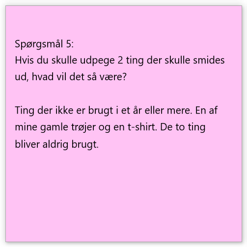
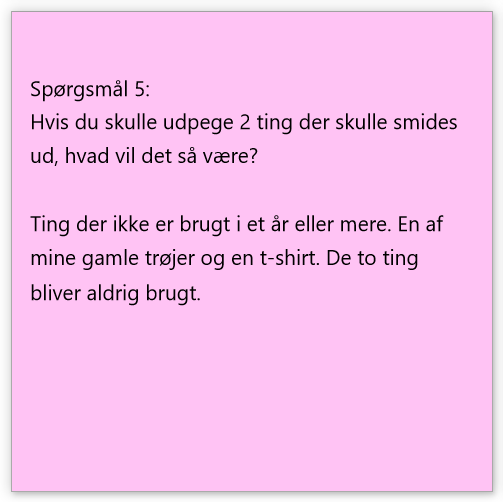

A) Brugerinterviews indhold.
What:
Der tales om pladsmanglen ved tøj og det gamle bliver ikke smidt ud men gemt. Der tales om problematikken omkring, hvorvidt det skal smides ud, doneres, eller gemmes til mulige børn i fremtiden. Børnenes tøj kan godt bruges igen. Der købes ikke tøj - grundet manglende plads og der byttes hurtigt rundt på rent og beskidt tøj da børnene ofte tager fejl af hvad der er rent og beskidt.
How:
Brugeren er forvirret og frustreret grundet pladsmangel og problematikken omkring, hvorvidt tøjet skal gemmes grundet manglende viden om der skal flere børn i verden. Brugerens børn tager tit fejl af hvor det rene og beskidte tøj skal hen, som skaber frustrationer hos brugeren.
Why:
Brugeren er motiveret til at smide tøjet ud eller give det videre/donere det. Brugeren giver op grundet manglende viden om, hvorvidt det skal gemmes såfremt der skal flere børn til verden. "Need" og "Want" mødes altså ikke her, da brugeren giver op.
B) Interview med Morten Fuglevik - Emne: Klædeskab
 

Behov:
Der opstår hurtigt viden omkring at der er et primært behov, for at anskaffe et klædeskab til opbevaring af alt tøjet, der ligger rundt omkring, der samtidig skaber et rod. Det gør at et sekundært behov opstår, nemlig at tøjet skal organiseres før det kan komme på plads i det fremtidige klædeskab. Et tredje behov er påvirket af Mortens følelser omkring den sentimentale værdi af overfrakken, som er arvet. Det gør at når der skal smides tøj ud, er der et behov for at gemme dette ene stykke.
Handlinger/Følelser:
Der opstår en hvis nedtrykthed og frustration omkring, at der i øjeblikket ikke er noget klædeskab til opbevaring af hans tøj. Det gør at hjemmet bliver uorganiseret og 'føles' et kaos. Morten skrider til handling ved at anskaffe sig et klædeskab, så situationen kan optimeres.
What:
Brugeren forklarer om sin situation, omkring det at stå uden et klædeskab, samt at det tøj der normalt ville være i et klædeskab blot ligger rundt omkring og flyder på diverse ting i hjemmet. En problematik opstår, da han fortæller at det til tider kan være hindrende at finde tøj der passer grundet hans højde. Selvom der er diverse udfordringer har brugeren en klar favorit blandt hans tøj som er et arvestykke.
How:
Brugeren er nedtrykt og lidt pinlig over, at der ikke er et klædeskab. Det er med tunge ord at forklaringer kommer til rette. Brugeren forklarer meget stille med en sørgmodig fremtoning om det sentimentale arvestykke af en overfrakke, han har i sin samling. Med glæde kommer det stærkt til udtryk at brugeren allerede er i gang, med at opfylde hans eget behov for et klædeskab, da han allerede har bestilt et og venter på det kommer hjem.
Why:
Brugeren er her meget bevidst om situationen og problematikken ved et manglende klædeskab. Han fremstår dog med en glædelig fremtoning at der er skredet til handling ved at løse hans behov (need), da der allerede er bestilt et klædeskab hjem. "Need" og "Want" overlappes altså her for at komme problematikken til bunds.